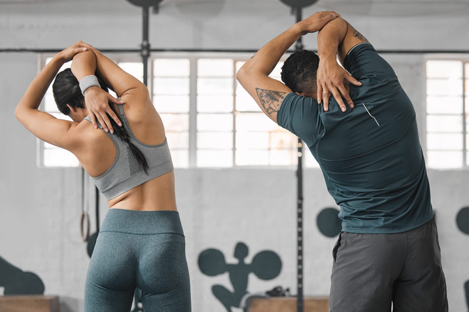

Prevención de lesiones en entrenamiento funcional
El entrenamiento funcional mejora la fuerza, estabilidad y movilidad, pero requiere técnica y preparación adecuadas para evitar lesiones.

Claves para prevenir
- Calentamiento dinámico 10-15 min
- Movilidad articular previa
- Progresión gradual en intensidad
Carga adecuada
Usa pesos que permitan mantener la técnica correcta. Una carga excesiva o mala postura aumenta el riesgo de lesiones en articulaciones y músculos.